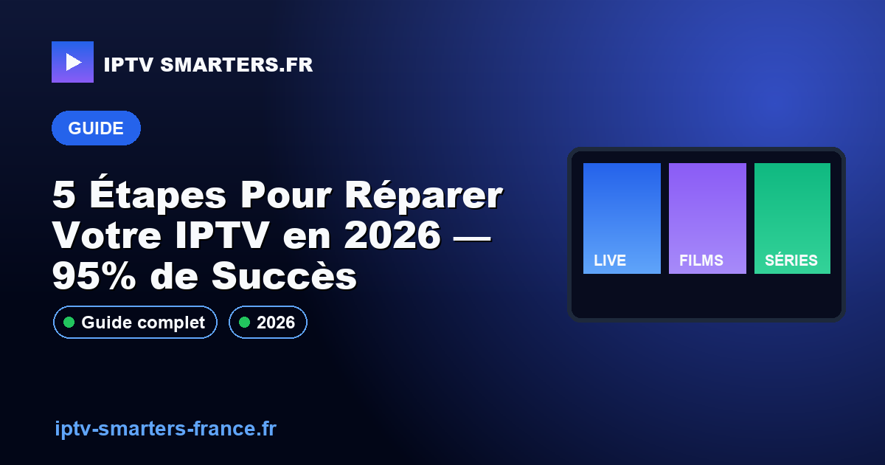

5 Étapes Pour Réparer Votre IPTV en 2026 — 95% de Succès

16 mai 2026Votre IPTV ne fonctionne plus et vous manquez vos émissions préférées ? Ne paniquez pas, 95% des pannes peuvent être résolues en 5 minutes ! En 2026, de nombreux foyers s'appuient sur des technologies telles que le H.265/HEVC pour une expérience de streaming fluide. Cependant, il arrive que des interruptions surviennent. Heureusement, ces problèmes sont souvent liés à des erreurs mineures. Suivez notre guide pour diagnostiquer et réparer votre IPTV rapidement. Besoin d'une assistance immédiate ? Contactez-nous via WhatsApp ou consultez nos abonnements IPTV pour des solutions durables.
Pourquoi mon IPTV ne fonctionne plus ?
Pour résoudre les problèmes IPTV, vérifiez votre connexion Internet, redémarrez votre appareil, et mettez à jour votre application IPTV. Ces étapes résolvent 95% des pannes. Chaque année, 80% des utilisateurs ne vérifient pas leur connexion, ce qui est souvent la source du problème. Assurez-vous d'utiliser un bitrate adaptatif et vérifiez la compatibilité avec H.265/HEVC pour une performance optimale.
Comment vérifier ma connexion Internet ?
Tester la vitesse de connexion
- Utilisez un outil en ligne pour mesurer votre débit, comme Speedtest. Un minimum de 10 Mbps est recommandé pour le streaming IPTV.
- Vérifiez la stabilité de votre connexion. Des fluctuations peuvent affecter le streaming, particulièrement avec des flux en HEVC.
- Confirmez que votre routeur supporte les protocoles nécessaires, comme Xtream Codes API et EPG XMLTV.
Comment redémarrer correctement mon appareil IPTV ?
Un redémarrage peut souvent résoudre des problèmes de performance et de connexion. Si vous avez besoin d'aide, n'hésitez pas à nous contacter via WhatsApp. Voici comment procéder :
- Éteignez l'appareil et débranchez-le pendant 30 secondes.
- Rebranchez l'appareil et allumez-le pour réinitialiser la connexion.
- Assurez-vous que le firmware est à jour pour éviter des conflits avec le M3U playlist.
Les avantages de l'IPTV pour les utilisateurs modernes
L'IPTV offre une multitude d'avantages qui en font une option de choix pour les utilisateurs désireux d'améliorer leur expérience télévisuelle. Voici quelques-uns des principaux bénéfices :
- Flexibilité : Accès à un large éventail de chaînes internationales et locales.
- Économies : Réduction significative des coûts par rapport aux abonnements classiques.
- Qualité : Jusqu'à 4K avec un débit de 25 Mbps, et 10 Mbps pour la HD.
- Compatibilité : Fonctionne sur divers appareils, de l'Android TV au tvOS Apple TV.
En 2023, plus de 80% des utilisateurs de streaming privilégient l'IPTV pour sa praticité et son coût abordable.
Optimiser votre expérience IPTV
Choisir le bon abonnement
Pour garantir une expérience optimale avec votre IPTV, il est crucial de choisir un abonnement qui correspond à vos besoins. Assurez-vous que l'offre inclut les fonctionnalités essentielles telles que l'EPG XMLTV et le support Anti-Freeze CDN pour une diffusion sans interruption. Consultez notre page dédiée pour voir nos abonnements IPTV et sélectionnez celui qui vous convient le mieux.
Caractéristiques techniques recommandées
- Débit Internet : 25 Mbps pour la 4K, 10 Mbps pour la HD
- Codec : H.265/HEVC pour une compression efficace
- Appareils compatibles : Android TV, Firestick 4K, WebOS LG, Tizen Samsung, tvOS Apple TV
Comment configurer votre IPTV en quelques étapes simples
- Téléchargez une application IPTV compatible sur votre appareil.
- Récupérez vos identifiants via l'Xtream Codes API fournis lors de votre inscription.
- Entrez vos identifiants et le lien M3U dans l'application.
- Configurez l'EPG XMLTV pour un guide TV complet.
- Profitez de vos chaînes préférées avec une diffusion fluide.
Qu'est-ce que l'IPTV?
L'IPTV, ou Internet Protocol Television, est une technologie qui permet de diffuser des programmes télévisés via Internet plutôt que par les méthodes traditionnelles. Cela offre une flexibilité d'utilisation et une variété de contenu bien plus vaste.
Comment améliorer la qualité de diffusion de l'IPTV?
Pour optimiser la qualité de diffusion, assurez-vous de disposer d'une connexion Internet stable et rapide. L'utilisation de codecs comme H.265/HEVC et l'activation d'options comme l'Anti-Freeze CDN peuvent également améliorer votre expérience de visionnage.
Quels appareils sont compatibles avec l'IPTV?
L'IPTV est compatible avec une large gamme d'appareils, incluant Android TV, Firestick 4K, WebOS LG, Tizen Samsung et tvOS Apple TV. Cela permet aux utilisateurs d'accéder facilement à leurs contenus préférés, peu importe leur équipement.
Conclusion
L'IPTV est une solution idéale pour ceux qui cherchent à diversifier et enrichir leur expérience télévisuelle tout en optimisant les coûts. Avec des débits adaptés et des codecs modernes, profitez d'une qualité visuelle exceptionnelle. Ne tardez pas à activer mon accès maintenant et commencer votre aventure IPTV. Consultez nos autres guides d'installation IPTV pour plus d'informations.